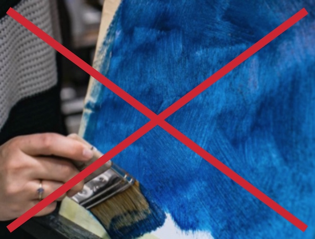
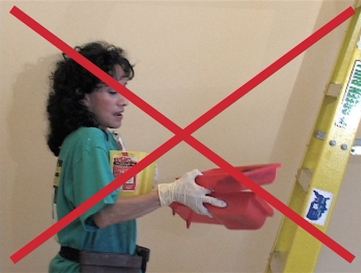
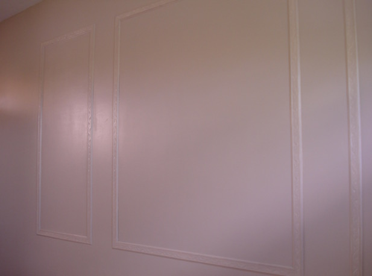
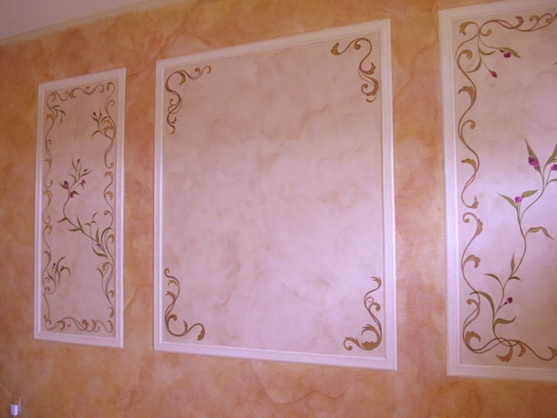
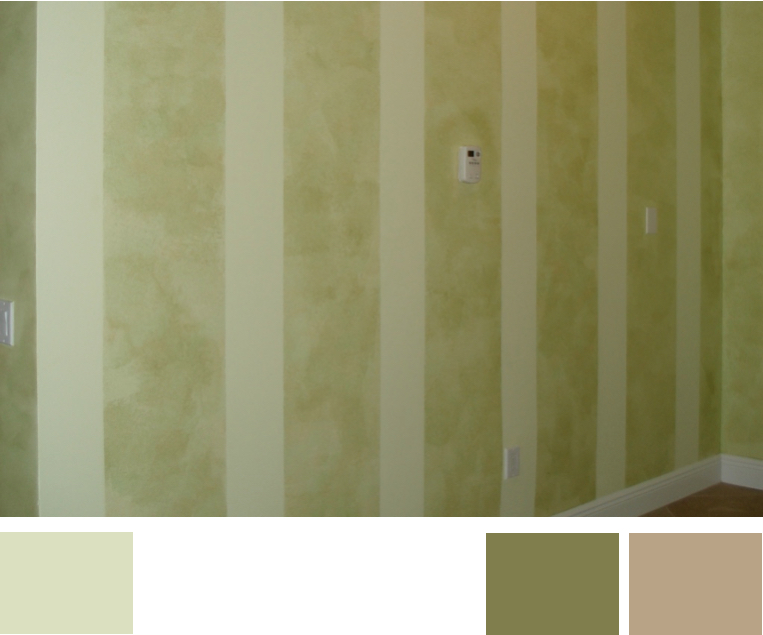
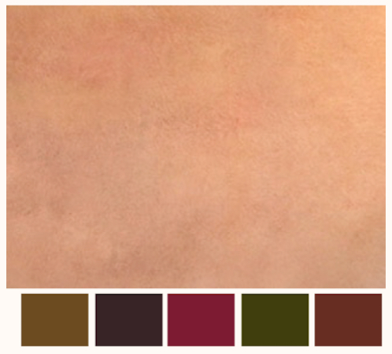
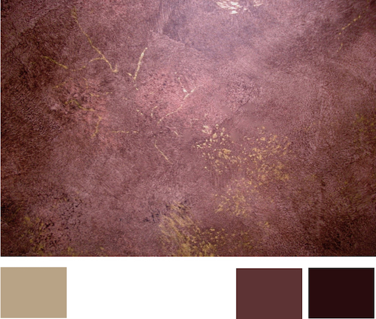
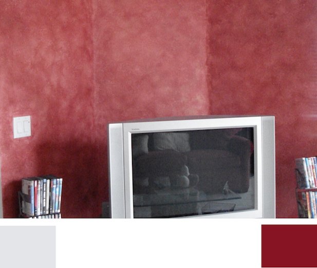

Now you can learn to faux paint this beautiful faux finish technique known as color washing, without the complicated messy steps that other methods use.

Color Washing in multiple colors can be achieved so quickly with the Multi Color Faux Palette. This innovative tool makes applying your glaze colors on the wall easier than any other method of color washing. Using both the palette and Poofy Pad, will save you time and make your painting much more enjoyable. Both of them are included in the BASIC Faux Painting Kit, which is on sale for only $41.99. It has 5 tools and a DVD. You can also choose to watch online with our E-DVD. Make that choice in our store drop down menu for any of out kits. We will send you a link via email to view.

You will also receive, FREE of charge, a Faux Painting Color Suggestions and Idea E-book-book. It will help you when it comes to choosing your faux painting colors. But hurry in purchasing yours because it is only for a limited time.

Other systems that teach color washing or blending, instruct you to apply each glaze color with a brush or roller and then blend them together with cheese cloth. This is very time consuming. In addition, when you see these faux finishing techniques demonstrated, they always show someone applying the colors at eye level.

Have you ever stopped to consider how difficult it is to brush on multiple colors, requiring you to carry up each color in a tray, on walls that are 12 feet high? With the patented (7472450) Triple S Faux System, you eliminate the need for scaffolds or dangerously climbing up ladders with multiple trays.
Look at these before and after pictures to see how adding a Color Wash to your white walls will make a big difference.


A great idea is to bring in the colors you see in your decor. You can also bring in the colors of your floor tile, too. Since adding a Color Wash in multiple colors is easy with the Triple S Faux system, this will help to bring continuity in your room.
Look at the suggestions for color schemes below.

This wall has a light green base coat (color on the left) that was taped with stripes and color washed with a green and tan glaze on top.

Here, this wall has 5 colors - gold, red, green and brown, color washed at the same time over a off white base coat.

This wall is faux painted with a color wash of dark brown and black on tan base coat (color on the left). Metallic gold was added with a sponge and fines lines with a feather or brush.

Here, this color wash has just one color, red. It was done in 2 layers over an off white base coat (color on the left).

(This kit includes Basic, Faux Marble, Faux Wood Kit and tools for texturing)
*FREE Priority Shipping and Color Idea E-book